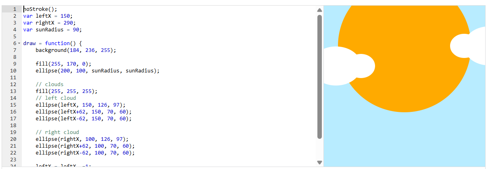

Nubes que se separan
Dos nubes hechas con tres elipses cada una se mueven en direcciones opuestas y dejan ver un sol que crece detrás. Cada nube comparte una sola variable (leftX o rightX), así que mover una variable mueve sus tres elipses a la vez.
Resultado
Código
Código del proyecto de Khan Academy. En js/nubes.js está adaptado a p5.js para funcionar en una página web.
noStroke();
var leftX = 150;
var rightX = 290;
var sunRadius = 90;
draw = function() {
background(184, 236, 255);
fill(255, 170, 0);
ellipse(200, 100, sunRadius, sunRadius);
// clouds
fill(255, 255, 255);
// left cloud
ellipse(leftX, 150, 126, 97);
ellipse(leftX+62, 150, 70, 60);
ellipse(leftX-62, 150, 70, 60);
// right cloud
ellipse(rightX, 100, 126, 97);
ellipse(rightX+62, 100, 70, 60);
ellipse(rightX-62, 100, 70, 60);
leftX = leftX -=1;
rightX = rightX +=1;
sunRadius = sunRadius +=2;
};En p5.js noStroke() se llama una sola vez en setup() y draw se declara como function draw(). En el código adaptado (js/nubes.js) esas tres líneas de movimiento se escriben de forma más corta (leftX -= 1;), con el mismo resultado.
Conceptos que se practican
| Elemento | Qué hace |
|---|---|
var leftX, var rightX | Posición horizontal del centro de cada nube. Las otras dos elipses de la nube se calculan sumando o restando 62 (leftX + 62, leftX - 62). |
Tres elipses = una nube | Una elipse grande (126 × 97) en el centro y dos más pequeñas (70 × 60) a los lados forman la silueta de la nube. |
leftX = leftX -=1 | La nube izquierda se desplaza 1 píxel a la izquierda por fotograma; rightX = rightX +=1 mueve la derecha en sentido contrario. Así «se separan». -= y += restan o suman y guardan el resultado, por eso equivale a leftX -= 1. |
sunRadius | Controla el tamaño del sol. Aunque se llama «radius», ellipse() recibe diámetros, así que es en realidad el diámetro. |
Orden de dibujo | El sol se pinta antes que las nubes, por eso las nubes pasan por delante. |
background() | Se repite en cada fotograma para borrar lo dibujado antes y que se vea movimiento en lugar de un rastro. |
Captura del editor original
